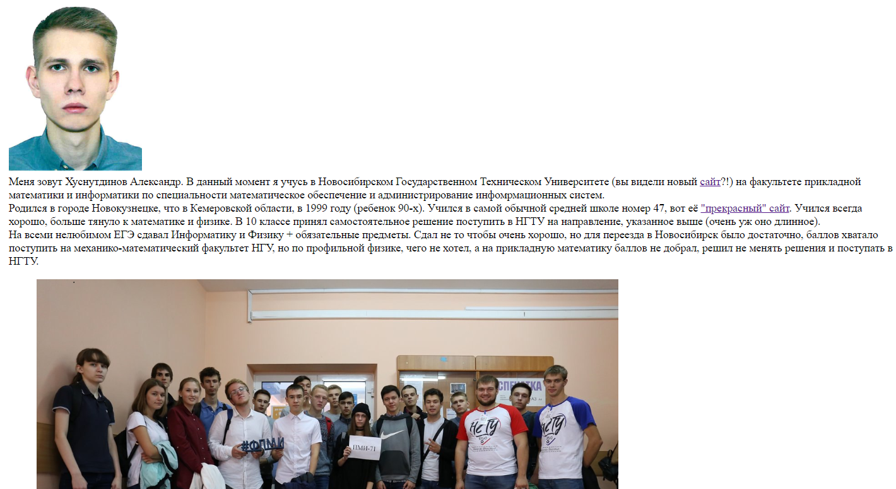
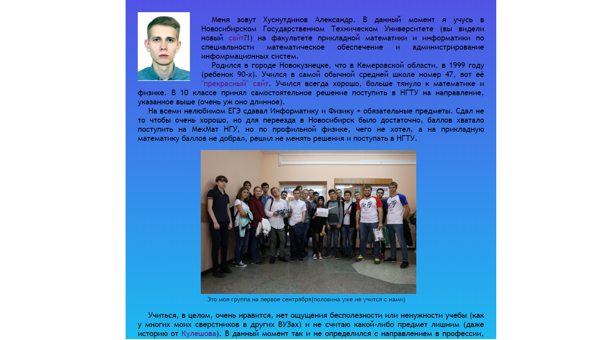

Для начала, построим каркас web-страницы, в основном, я пользовался универсальным контейнером div, так же добавил своё фото при помощи тега img и фото с подписью с помощью тегов HTML5: figure и figcaption.
Но без стилей страница выглядит некрасиво:

Текст располагается от левого до правого края, что может помешать восприятию информации на больших мониторах и изображения представленны в своих первоначальных размерах. Также отсутствуют какие-либо цвета, шрифты и прочее.
Теперь, добавим немного стилей:
- 1. Установим на всей странице шрифт без засечек;
- 2. Контейнер с содержимым сайта сделаем с небольшими отступами слева и справа, разместим его посередине;
- 3. Уберем подчеркивание у ссылок и добавим изменение цвета, при наведении на них курсора;
- 4. У каждого абзаца добавим отступ первой строки и выравнивание по ширине;
- 5. Добавим обтекание текстом фото;
Как результат, сайт выглядит теперь совсем по-другому, хотя добавили совсем немного изменений.
